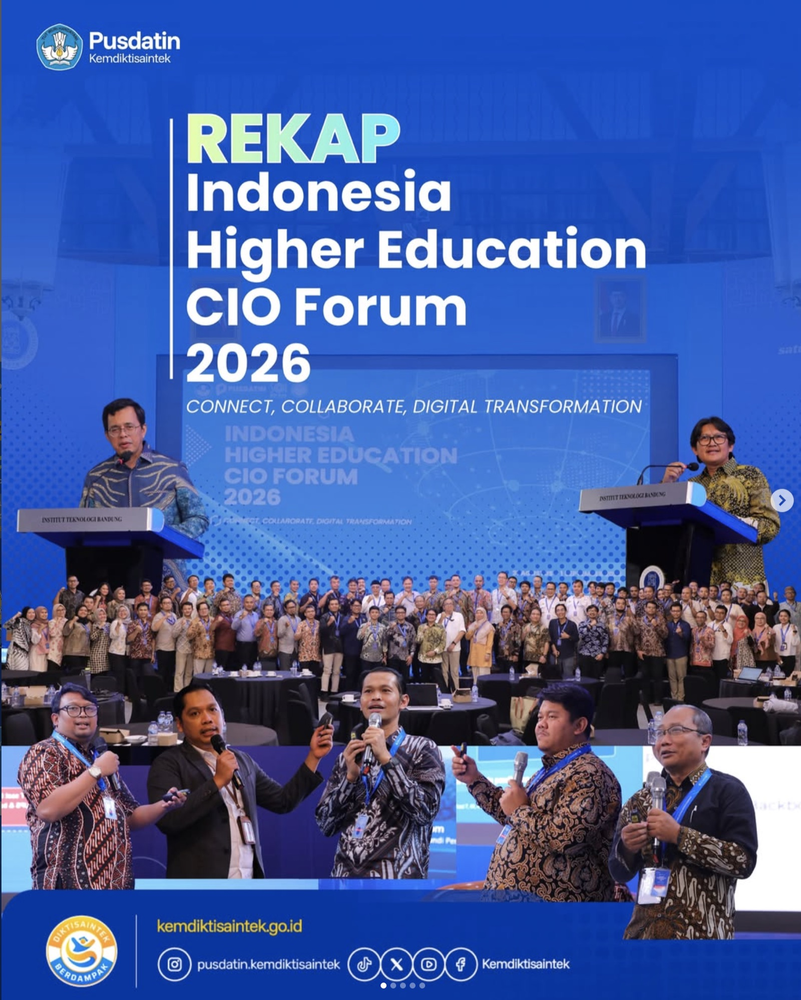
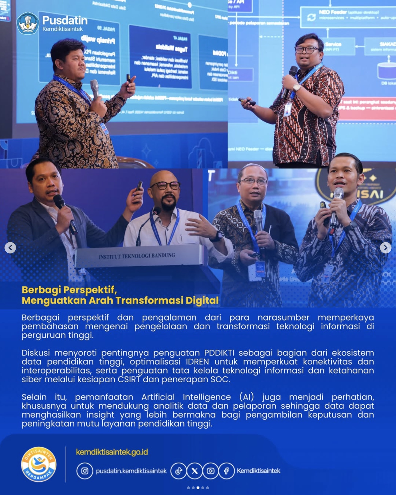
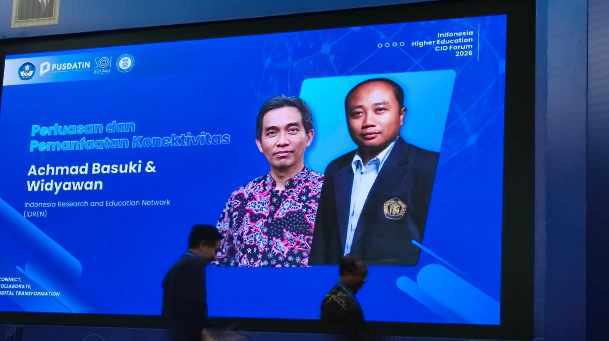

The LLMNetOps project was mentioned at the Indonesia Higher Education CIO Forum 2026, held by the Center for Data and Information Technology (Pusdatin) of the Ministry of Higher Education, Science, and Technology together with IDREN and SOI Asia, on August 31 – September 1, 2026 at Institut Teknologi Bandung (ITB). The forum brought together IT directors, CIOs, and technology unit leaders from more than 40 universities across Indonesia, under the theme "Empowering PDDikti through IDREN Collaboration: Advancing IT Governance, Cyber Resilience, and Operational Excellence."
During a session on the use of AI in network management, Dr. Achmad Basuki (Secretary General of IDREN and Project Lead of LLMNetOps) shared that an upcoming training program on applying AI to campus network management is being planned for IDREN member universities. This initiative aligns closely with LLMNetOps' goal of strengthening AI literacy and network operations capacity across IDREN institutions through privacy-first, locally-hosted LLM approaches.
The mention highlights LLMNetOps' relevance to the national agenda on strengthening IT governance and cyber resilience in higher education.
Read more about the forum on the Pusdatin Kemdiktisaintek website, and learn more about the LLMNetOps project at apnic.foundation/projects/llmnetops.


